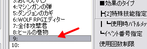
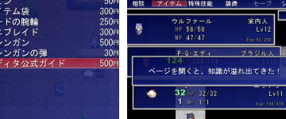

ユーザデータベース
右のようなウィンドウが表示されます。

【目標】
新しくアイテム（道具）を増やします。
ここでは、ウディタ公式ガイド（効果：味方全員完全回復）を作成します。
| 【1】 ユーザデータベース 右のようなウィンドウが表示されます。 |
|
| 【2】 ウィンドウが開いた直後は 「タイプ」が「技能」になっています。 「2:アイテム」をクリックして下さい |
|
| 【3】 「データ」の空いているところを クリックして下さい |
 |
| 【4】 「ページ１」の各項目を 入力して下さい ここでは以下の項目を 入力しています。 ・アイテム名 ・説明文 ・効果のタイプ ・効果対象 ・ＨＰ回復 （最大の１００％回復） ・ＳＰ回復 （最大の１００％回復） ・回復するステータス ・使用後の文章 ・販売価格 （５００円） ※入力値はサンプルゲームの 「薬ビン」と「ヒールの巻物」を 参考にしています ※分からない項目は サンプルゲームのアイテムを 真似してみましょう |
|
【5】
更新ボタンかＯＫボタンを押して下さい。
新しいアイテム「ウディタ公式ガイド」が保存されました。
| 【余談】テストプレイ 作成したアイテムをショップに陳列し、 購入して使用すると右のようになります。 お店に商品を追加させる方法は ◆お店イベントを作りたい をご覧下さい。 |
 |
＜執筆者：さくらば結城＞